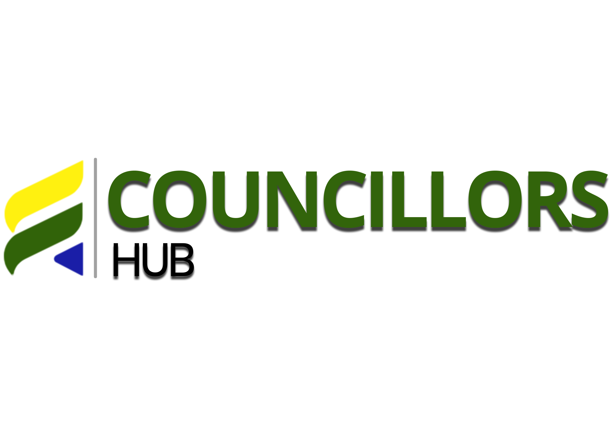

01
MPAC support
Setting up systems and procedures for MPAC scrutiny and oversight.
Public sector solutions

We help municipalities, councillors and public institutions drive better governance, accountability and long-term impact.
Councillors Hub is a 100% black-owned think tank specialising in municipal governance, strategy development, and capacity building. We empower municipal councils with data-driven insights and practical support that strengthen accountability, oversight and service delivery.
Setting up systems and procedures for MPAC scrutiny and oversight.
Training and practical support that equips teams and councillors for better leadership.
Strategic planning frameworks that align leadership, governance and service delivery.
We provide credible evidence and strategic intelligence that help municipal councils make informed decisions.
Our work is designed to strengthen oversight, accountability, compliance, and institutional performance.
We bridge the gap between policy and practice through actionable recommendations and implementation support.
Every intervention is aimed at improving governance outcomes, service delivery performance, and community impact.